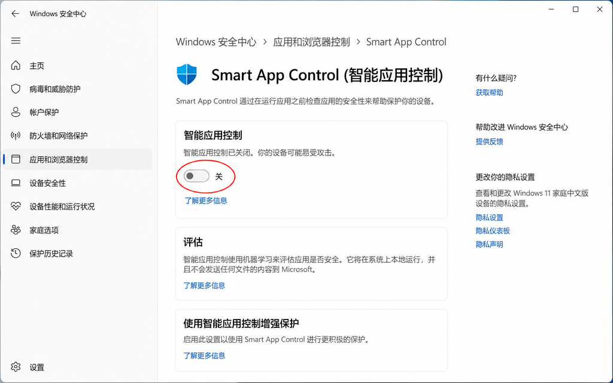
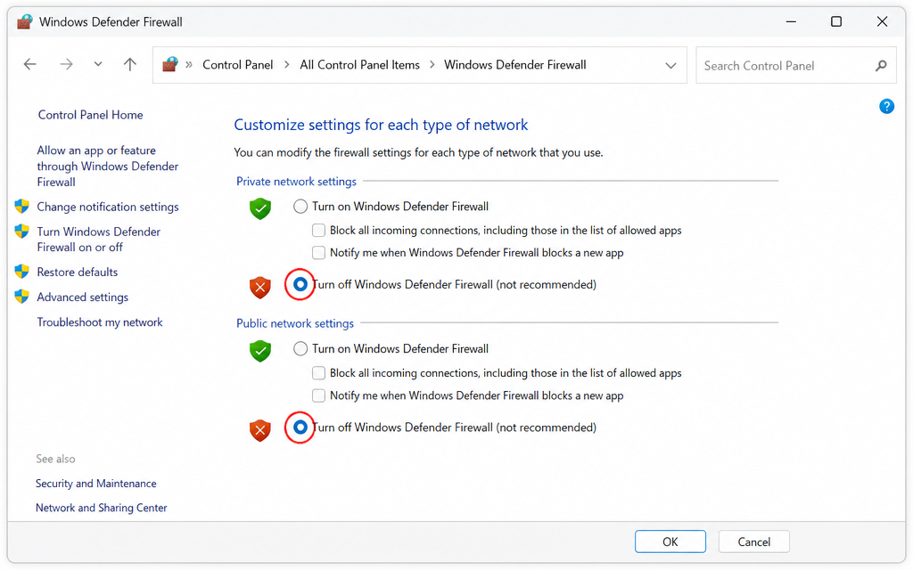
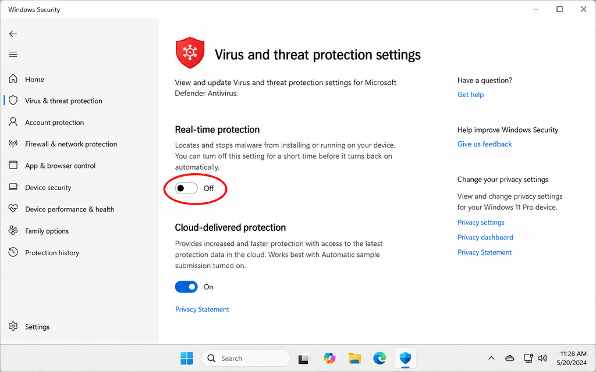

如何关闭 Win10 / Win11 智能应用控制和防火墙
解决软件安装被拦截的问题，安装完成后记得重新开启保护
⚠️ 操作前请注意
关闭防火墙和智能应用控制会降低系统安全性。请确保你只从 官方渠道（frp.moe）下载 KatoFrp，安装完成后务必重新开启这些保护功能。
本教程适用于：Windows 10Windows 11
🛡️ 第一步：关闭智能应用控制（Win11 专属）
智能应用控制（Smart App Control）是 Windows 11 22H2 及以上版本新增的安全功能，它会自动阻止未经微软认证的应用程序运行。如果你在安装 KatoFrp 时看到"此应用已被阻止"的提示，需要先关闭此功能。
📌 如何判断是否需要关闭？
如果你使用的是 Windows 10，可以跳过此步骤，直接看第二步关闭防火墙。
如果你使用的是 Windows 11 且安装时弹出"智能应用控制已阻止此应用"，则需要执行此步骤。

Windows 安全中心 → 基于信誉的保护 → 智能应用控制，将其关闭
打开 Windows 安全中心
点击任务栏右下角的盾牌图标，或者按 Win + S 搜索"Windows 安全中心"并打开。
进入"应用和浏览器控制"
在 Windows 安全中心左侧菜单中，点击"应用和浏览器控制"（App & browser control）。
找到"智能应用控制"设置
在页面中找到"智能应用控制"（Smart App Control）部分，点击"智能应用控制设置"链接。
将智能应用控制设置为"关闭"
在智能应用控制页面，选择"关闭"选项。系统可能会弹出确认对话框，点击确认即可。
⚠️ 注意：关闭后需要重启电脑才能完全生效。
🔴 重要提示
智能应用控制一旦关闭，无法直接重新开启，只能通过重置电脑或重装系统来恢复。因此，请确认你确实需要安装的软件是安全可信的，再执行此操作。
KatoFrp 官方下载地址：frp.moe，请勿从其他来源下载。
🔥 第二步：关闭 Windows Defender 防火墙
Windows 防火墙有时会阻止 KatoFrp 的网络连接，导致无法正常联机。以下步骤适用于 Windows 10 和 Windows 11。

控制面板 → Windows Defender 防火墙 → 启用或关闭防火墙，将专用和公用网络均设为关闭
打开控制面板
按 Win + R 打开运行窗口，输入 control 并按回车，打开控制面板。
或者按 Win + S 搜索"控制面板"并打开。
进入 Windows Defender 防火墙
在控制面板中，点击"系统和安全"，然后点击"Windows Defender 防火墙"。
点击"启用或关闭 Windows Defender 防火墙"
在左侧菜单中，点击"启用或关闭 Windows Defender 防火墙"链接。
关闭专用网络和公用网络的防火墙
在设置页面中，你会看到两个部分：
• 专用网络设置：选择"关闭 Windows Defender 防火墙（不推荐）"
• 公用网络设置：选择"关闭 Windows Defender 防火墙（不推荐）"
两个都选好后，点击"确定"按钮保存设置。
💡 更推荐的方式：添加防火墙例外
如果你不想完全关闭防火墙，可以只为 KatoFrp 添加例外规则：
在 Windows Defender 防火墙页面 → 点击左侧"允许应用或功能通过 Windows Defender 防火墙" → 点击"更改设置" → 点击"允许其他应用" → 浏览找到 KatoFrp.exe → 添加即可。
🦠 第三步：关闭病毒和威胁防护实时保护
Windows Defender 的实时保护功能有时会误判 KatoFrp 为威胁并将其删除或阻止运行。如果安装后程序被自动删除，或运行时弹出"已阻止威胁"提示，需要临时关闭实时保护。

Windows 安全中心 → 病毒和威胁防护 → 管理设置 → 关闭实时保护
打开 Windows 安全中心
点击任务栏右下角的盾牌图标，或按 Win + S 搜索"Windows 安全中心"并打开。
进入"病毒和威胁防护"
在 Windows 安全中心左侧菜单中，点击"病毒和威胁防护"（Virus & threat protection）。
点击"管理设置"
在"病毒和威胁防护设置"区域下，点击"管理设置"链接。
关闭"实时保护"
找到"实时保护"（Real-time protection）开关，点击将其切换为"关闭"状态。系统会弹出 UAC 权限确认，点击"是"即可。
⚠️ 注意：关闭后请尽快完成安装，不要长时间保持关闭状态。
💡 更推荐的方式：添加排除项
比完全关闭实时保护更安全的做法是为 KatoFrp 添加"排除项"：
在"病毒和威胁防护设置"页面 → 滚动到"排除项"区域 → 点击"添加或删除排除项" → 点击"添加排除项" → 选择"文件夹" → 选择 KatoFrp 的安装目录（默认为 C:\Program Files\KatoFrp）。
这样 Windows Defender 就不会扫描该目录，而其他文件仍受保护。
⚠️ 安装完成后请立即重新开启实时保护
实时保护是防止恶意软件入侵的重要防线。安装完 KatoFrp 后，请立即回到"病毒和威胁防护设置"页面，将实时保护重新开启。
📦 第四步：重新安装 KatoFrp
完成以上三步后，重新下载并安装 KatoFrp 客户端。
前往官网下载最新版本
访问 frp.moe 官网，下载最新版本的 KatoFrp 客户端安装包。
右键以管理员身份运行安装包
下载完成后，右键点击安装文件，选择"以管理员身份运行"，按照提示完成安装。
安装完成后重新开启防火墙
安装成功后，按照第二步的路径，将防火墙重新开启，并为 KatoFrp 添加防火墙例外规则，保持系统安全。
⚠️ 安装完成后请务必重新开启防火墙
防火墙是保护你电脑安全的重要屏障。安装完 KatoFrp 后，请立即按照上述步骤重新开启 Windows Defender 防火墙，并为 KatoFrp 添加例外规则，而不是长期保持关闭状态。
❓ 常见问题
关闭防火墙后还是无法安装？
可能是杀毒软件（如360、火绒、腾讯管家等）也在拦截。请临时关闭第三方杀毒软件后再尝试安装。安装完成后重新开启杀毒软件，并将 KatoFrp 添加到信任列表。
安装成功但运行时被拦截？
在杀毒软件中将 KatoFrp 的安装目录添加到"信任区"或"白名单"，然后重新运行程序。
Win10 没有智能应用控制选项？
智能应用控制是 Windows 11 22H2 及以上版本的专属功能，Windows 10 没有此功能，跳过第一步直接关闭防火墙即可。